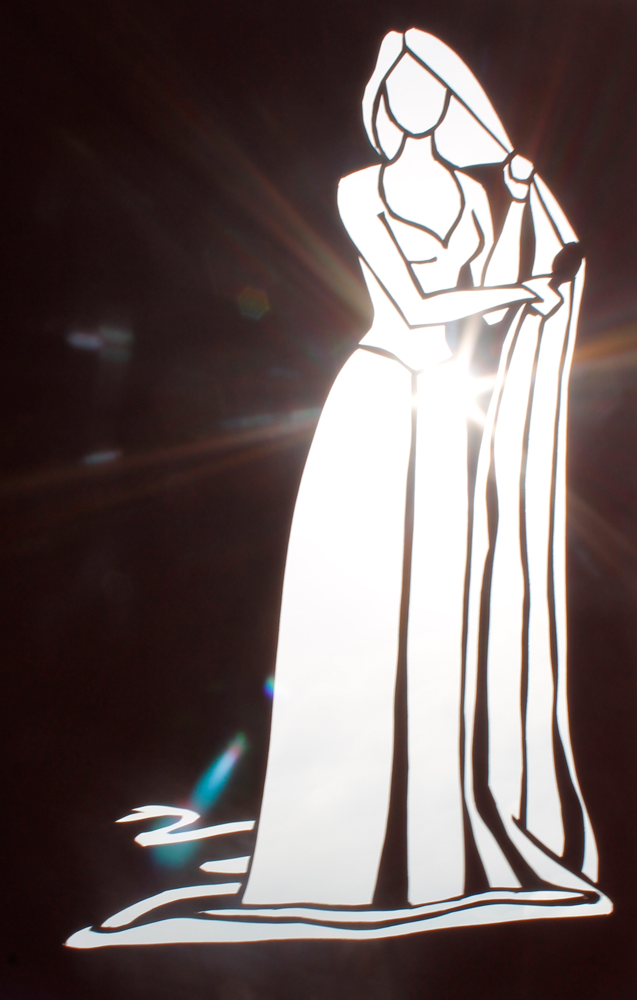
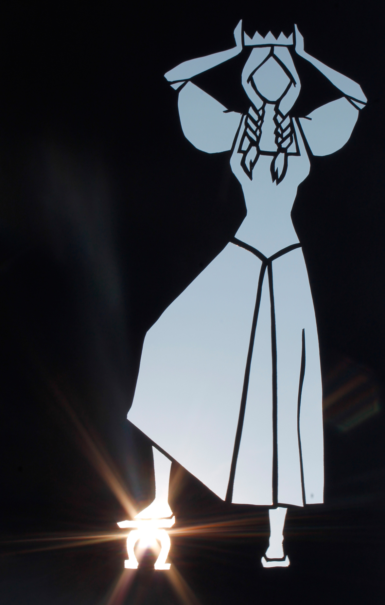
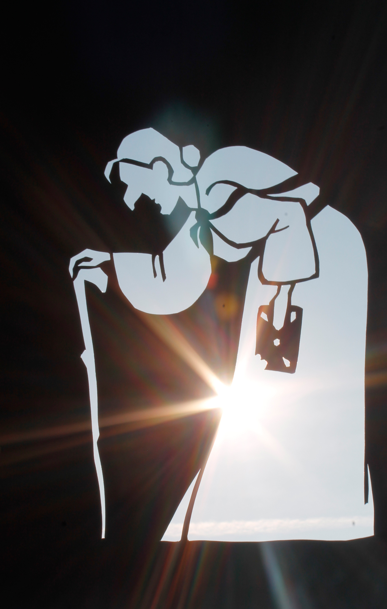

Scherenschnitte
Märchenheldinnen
Ich bilde die Wirklichkeit gerne auf meine eigene, fantasievolle Weise ab, verzerre und verdrehe sie in meinen Bildern. Der Surrealismus in der Kunst hat mich daher schon immer fasziniert und ich bringe ganz gerne einzelne Aspekte dieser Kunstrichtung in meine Arbeiten ein.
Titel, Farbkarton, 2017

Heldin, Farbkarton, 2017

Rapunzel, Farbkarton, 2017

Schwesterchen, Farbkarton, 2017
Kluge Bauerntochter, Farbkarton, 2017

Siebenschön, Farbkarton, 2017

Heldinnenvergleich, Farbkarton, 2017
Antiheldin, Farbkarton, 2017

Stiefschwestern, Farbkarton, 2017

Kammerfrau der Gänsemagd, Farbkarton, 2017
Kaisertocher (Schweinehirt), Farbkarton, 2017

Knusperhexe, Farbkarton, 2017
Antiheldinnenvergleich, Farbkarton, 2017
Frauenspiegel, Farbkarton, 2017